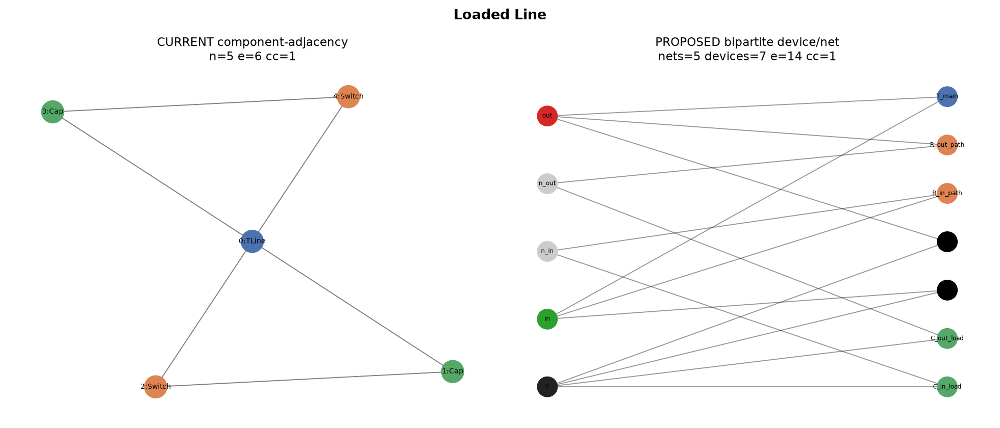
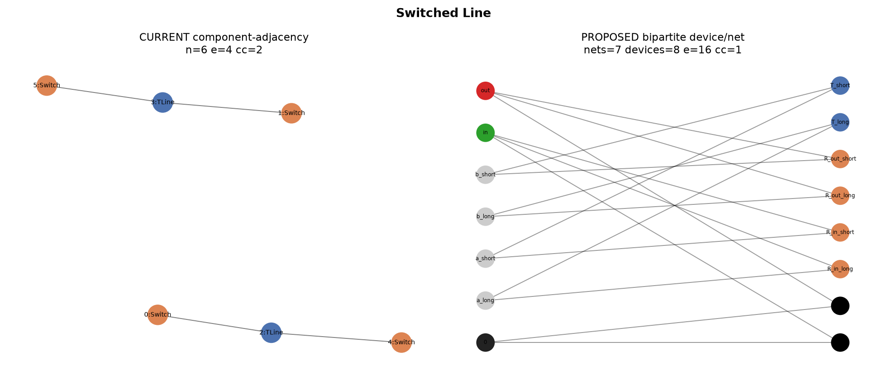
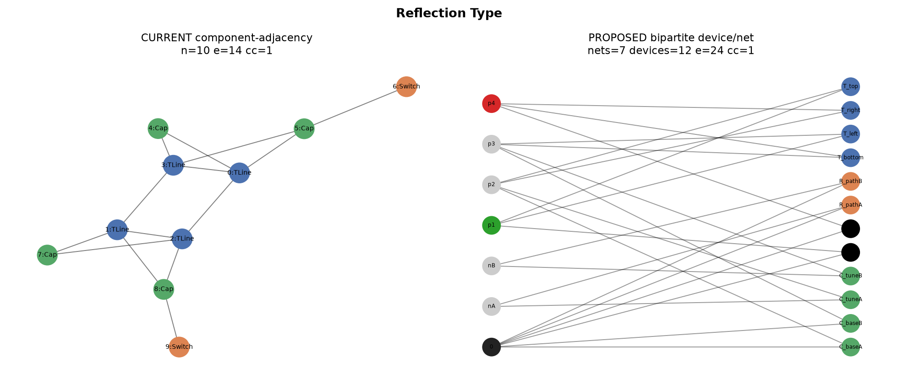
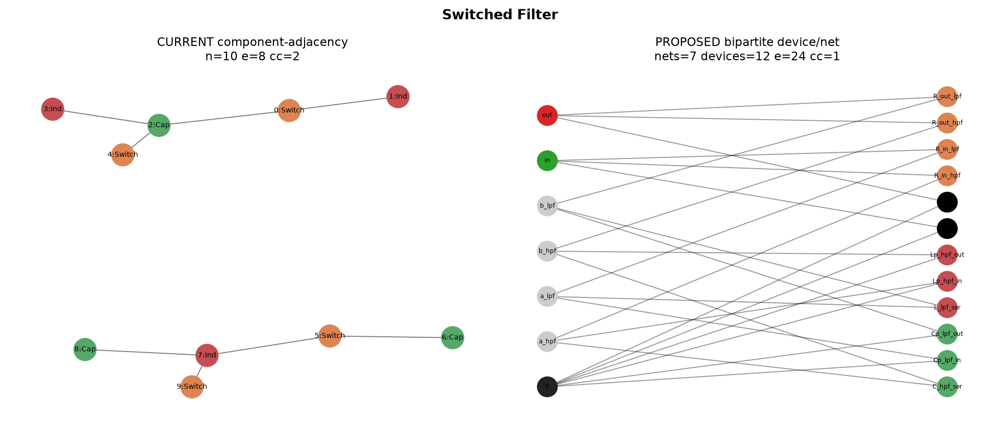
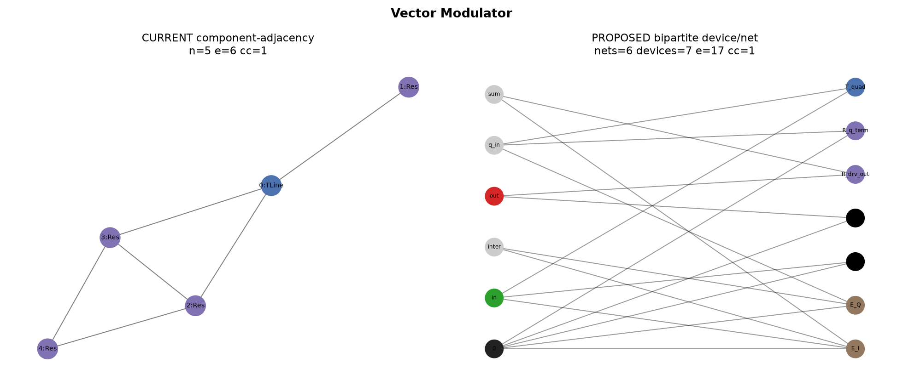
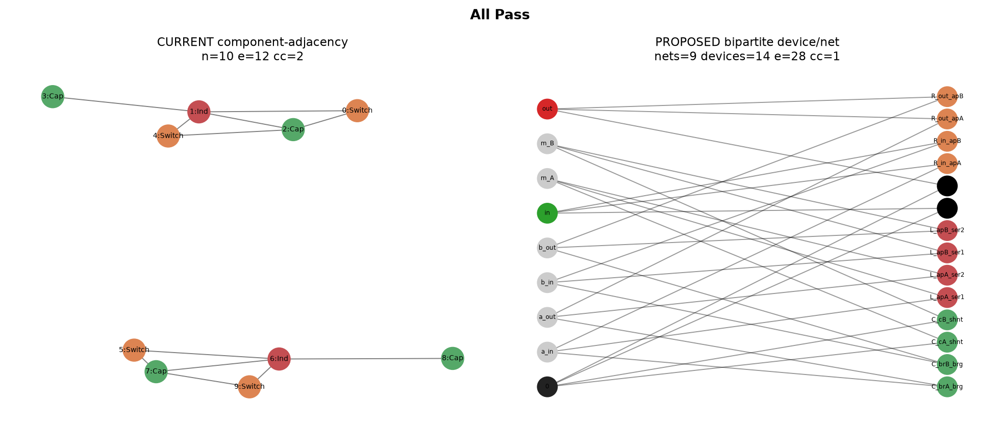

Loaded Line

Switched Line

Reflection Type

Switched Filter

Vector Modulator

All Pass

Structure improvement
| Topology | Old n | Old e | Old cc | New nets | New devices | New e | New cc | Connectivity fixed |
|---|---|---|---|---|---|---|---|---|
| Loaded_Line | 5 | 6 | 1 | 5 | 7 | 14 | 1 | — |
| Switched_Line | 6 | 4 | 2 | 7 | 8 | 16 | 1 | yes |
| Reflection_Type | 10 | 14 | 1 | 7 | 12 | 24 | 1 | — |
| Switched_Filter | 10 | 8 | 2 | 7 | 12 | 24 | 1 | yes |
| Vector_Modulator | 5 | 6 | 1 | 6 | 7 | 18 | 1 | — |
| All_Pass | 10 | 12 | 2 | 9 | 14 | 28 | 1 | yes |
Encoder rank diagnostic
From results/rank_diagnostic/rank_report.json
(500 random specs). Legacy GIN embeddings collapse to ≤6 unique vectors;
circuit encoder expands rank and within-topology variance.
| Encoder | Rank | Participation ratio | Within-topo var | Unique vectors |
|---|---|---|---|---|
| dying_relu | 5 | 1.935 | 5.876e-15 | 6 |
| sage_ln | 6 | 2.464 | 3.903e-13 | 6 |
| gin | 6 | 1.587 | 3.553e-12 | 6 |
| circuit | 23 | 1.831 | 0.01053 | 99 |